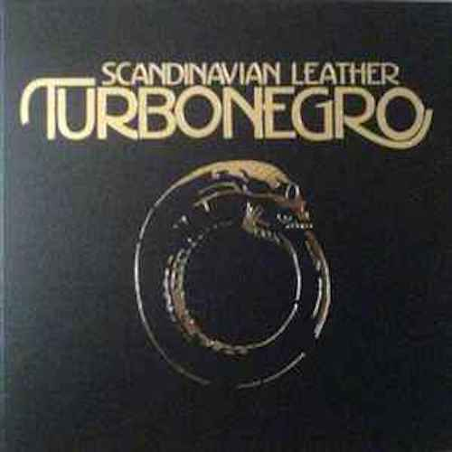

SCANDINAVIAN LEATHER
Released 2003
Musicians:
- Hank Von Helvete, vocals
- Euroboy, lead guitar
- Happy Tom, bass guitar & backing vocals
- Rune Rebellion, rhythm guitar
- På Pot Pamparious, keyboards, saxophone and percussion
- Chris Summers, drums
Scandinavian Leather is an album by the Norwegian deathpunk band Turbonegro that followed
the band's reunion in 2002 and was released in April 2003 on Burning Heart Records in
Sweden, on Bitzcore Records in Germany, on JVC/Victor Records in Japan, and on 6 May
2003 on Epitaph Records in the United States.
It is one of the best fucking albums,
ever.


- Intro The Blizzard Of Flames
- Wipe It 'Til It Bleeds
- Gimme Some
- Turbonegro Must Be Destroyed
- Sell Your Body (To The Night)
- Remain Untamed
- Train Of Flesh
- Fuck The World
- Locked Down
- I Want It All
- Drenched In Blood (D.I.B)
- Le Saboteur
- Ride Wth Us
- The german musician, producer and artist Klaus Voormann did the cover art for the album.
- Alot of people colaborated on this album, Henke Jonsson did the mastering and Joe Barresi did the mixing of the album, just to name a few.
- Hank Von Helvete
- Scandinavian Leather is Turbonegros sixth album.